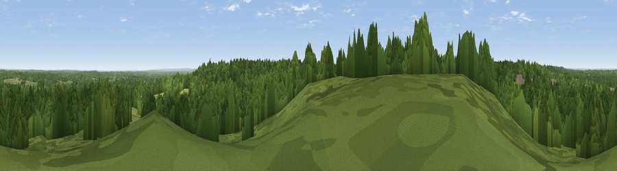

Viewpoint near Bagshot
#31703 in England · top 27% of its area beats it · near BagshotWhere it is
The exact computed spot (SU 90475 62025). Click the marker for map links.
The view, rendered

A 360° render of this exact spot computed from the terrain model, tree cover and land cover — summer colours, afternoon light, calibrated against photographs of famous viewpoints. Real trees, hedges and buildings will differ in detail.
The panorama
Grey silhouette: terrain skyline in each direction (720 bearings, Earth curvature and refraction included). Dashed green: skyline with trees (+15 m) and buildings (+8 m) as obstacles. Blue strip: how far the ground is visible on each bearing.
Where the view opens
Wedge length = distance to the farthest visible ground on that bearing (vegetation-aware). Rings at 10, 25 and 50 km.
What fills the view
78% woodland · 16% grassland · 6% built-up ·
Angular shares of the visible panorama (visual magnitude), not map area. Landscape diversity 0.29 (0–1 Shannon).
Key numbers
More beautiful places nearby
The staircase of upgrades: each row has a higher view potential than everything closer. Driving times are estimates from straight-line distance, calibrated against real road routing — check an actual route before setting out.
| Place | Direction | Drive | Score |
|---|---|---|---|
| High Curley Hill | ESE · 1 km | ~3 min | 49.7 |
| St Ann's Hill | ENE · 13 km | ~24 min | 51.8 |
| Viewpoint near Bishopsgate | NE · 13 km | ~25 min | 53.6 |
| Hungry Hill | SSW · 14 km | ~25 min | 57.2 |
| Viewpoint near Upper Hale | SSW · 14 km | ~25 min | 58.3 |
| Viewpoint near Puttenham | S · 14 km | ~25 min | 62.0 |
| Viewpoint near Wanborough | SSE · 14 km | ~26 min | 65.5 |
| Viewpoint near Compton | SSE · 15 km | ~26 min | 66.7 |
51.35011, -0.70222 · source: screening · position refined by local search. Computed location — check access rights before visiting.